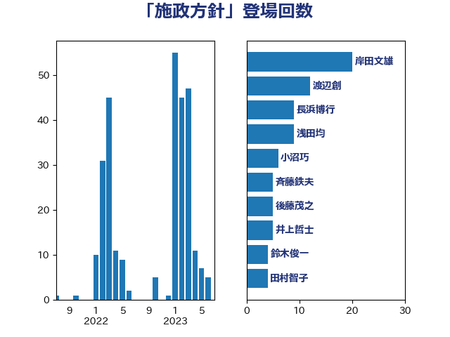

単語「施政方針」

| 菅義偉 | 自由民主党 | 11 回 |
| 長浜博行 | 無所属 | 9 回 |
| 岡田克也 | 立憲民主党 | 6 回 |
| 水岡俊一 | 立憲民主党 | 6 回 |
| 尾身朝子 | 自由民主党 | 4 回 |
| 山口壯 | 自由民主党 | 3 回 |
| 岬麻紀 | 日本維新の会 | 3 回 |
| 岸田文雄 | 自由民主党 | 3 回 |
| 田村智子 | 日本共産党 | 3 回 |
| 自見はなこ | 自由民主党 | 3 回 |
| 萩生田光一 | 自由民主党 | 3 回 |
| 赤木正幸 | 日本維新の会 | 3 回 |
| 野田佳彦 | 立憲民主党 | 3 回 |
| 伊藤孝恵 | 国民民主党 | 2 回 |
| 吉川元 | 立憲民主党 | 2 回 |
| 太田房江 | 自由民主党 | 2 回 |
| 小林鷹之 | 自由民主党 | 2 回 |
| 小沼巧 | 立憲民主党 | 2 回 |
| 山東昭子 | 自由民主党 | 2 回 |
| 岸信夫 | 自由民主党 | 2 回 |
| 岸真紀子 | 立憲民主党 | 2 回 |
| 打越さく良 | 立憲民主党 | 2 回 |
| 斉藤鉄夫 | 公明党 | 2 回 |
| 杉久武 | 公明党 | 2 回 |
| 枝野幸男 | 立憲民主党 | 2 回 |
| 柳本顕 | 自由民主党 | 2 回 |
| 柴田巧 | 日本維新の会 | 2 回 |
| 横沢高徳 | 立憲民主党 | 2 回 |
| 浜野喜史 | 国民民主党 | 2 回 |
| 玉木雄一郎 | 国民民主党 | 2 回 |
| 神津たけし | 立憲民主党 | 2 回 |
| 福田昭夫 | 立憲民主党 | 2 回 |
| 笠井亮 | 日本共産党 | 2 回 |
| 羽田次郎 | 立憲民主党 | 2 回 |
| 菊田真紀子 | 立憲民主党 | 2 回 |
| 藤川政人 | 自由民主党 | 2 回 |
| 西岡秀子 | 国民民主党 | 2 回 |
| 中谷一馬 | 立憲民主党 | 1 回 |
| 中谷真一 | 自由民主党 | 1 回 |
| 古川元久 | 国民民主党 | 1 回 |
| 土屋品子 | 自由民主党 | 1 回 |
| 塩崎彰久 | 自由民主党 | 1 回 |
| 塩川鉄也 | 日本共産党 | 1 回 |
| 大島敦 | 立憲民主党 | 1 回 |
| 奥野総一郎 | 立憲民主党 | 1 回 |
| 守島正 | 日本維新の会 | 1 回 |
| 安江伸夫 | 公明党 | 1 回 |
| 宮本周司 | 自由民主党 | 1 回 |
| 宮本岳志 | 日本共産党 | 1 回 |
| 小森卓郎 | 自由民主党 | 1 回 |
| 小池晃 | 日本共産党 | 1 回 |
| 山口俊一 | 自由民主党 | 1 回 |
| 山口那津男 | 公明党 | 1 回 |
| 山崎正恭 | 公明党 | 1 回 |
| 山本剛正 | 日本維新の会 | 1 回 |
| 岡本あき子 | 立憲民主党 | 1 回 |
| 川田龍平 | 立憲民主党 | 1 回 |
| 平木大作 | 公明党 | 1 回 |
| 後藤祐一 | 立憲民主党 | 1 回 |
| 志位和夫 | 日本共産党 | 1 回 |
| 本村伸子 | 日本共産党 | 1 回 |
| 杉尾秀哉 | 立憲民主党 | 1 回 |
| 杉本和巳 | 日本維新の会 | 1 回 |
| 東徹 | 日本維新の会 | 1 回 |
| 松山政司 | 自由民主党 | 1 回 |
| 松本尚 | 自由民主党 | 1 回 |
| 松野博一 | 自由民主党 | 1 回 |
| 柚木道義 | 立憲民主党 | 1 回 |
| 梅村みずほ | 日本維新の会 | 1 回 |
| 橋本岳 | 自由民主党 | 1 回 |
| 櫻井周 | 立憲民主党 | 1 回 |
| 武見敬三 | 自由民主党 | 1 回 |
| 浅田均 | 日本維新の会 | 1 回 |
| 渡辺猛之 | 自由民主党 | 1 回 |
| 猪口邦子 | 自由民主党 | 1 回 |
| 田中健 | 国民民主党 | 1 回 |
| 田島麻衣子 | 立憲民主党 | 1 回 |
| 畦元将吾 | 自由民主党 | 1 回 |
| 石井啓一 | 公明党 | 1 回 |
| 礒崎哲史 | 国民民主党 | 1 回 |
| 神田潤一 | 自由民主党 | 1 回 |
| 福岡資麿 | 自由民主党 | 1 回 |
| 福重隆浩 | 公明党 | 1 回 |
| 笠浩史 | 無所属 | 1 回 |
| 笹川博義 | 自由民主党 | 1 回 |
| 紙智子 | 日本共産党 | 1 回 |
| 細田博之 | 自由民主党 | 1 回 |
| 緑川貴士 | 立憲民主党 | 1 回 |
| 美延映夫 | 日本維新の会 | 1 回 |
| 舟山康江 | 国民民主党 | 1 回 |
| 舩後靖彦 | れいわ新選組 | 1 回 |
| 芳賀道也 | 国民民主党 | 1 回 |
| 落合貴之 | 立憲民主党 | 1 回 |
| 藤巻健太 | 日本維新の会 | 1 回 |
| 西銘恒三郎 | 自由民主党 | 1 回 |
| 谷合正明 | 公明党 | 1 回 |
| 辻元清美 | 立憲民主党 | 1 回 |
| 逢坂誠二 | 立憲民主党 | 1 回 |
| 鈴木貴子 | 自由民主党 | 1 回 |
| 阿部司 | 日本維新の会 | 1 回 |
| 階猛 | 立憲民主党 | 1 回 |
| 高木毅 | 自由民主党 | 1 回 |
| 高橋千鶴子 | 日本共産党 | 1 回 |